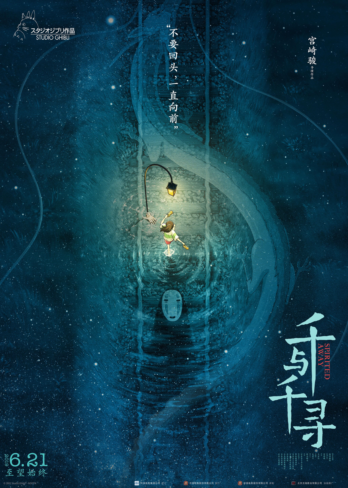

HOME

《いつも何度でも》
[Theme song of the Studio Ghibli film , Spirited Away]
日文歌词
呼んでいる 胸のどこか奥で
いつも心踊る 梦を见たい
かなしみは 数えきれないけれど
その向こうできっと あなたに会える
缲り返すあやまちの そのたび ひとは
ただ青い空の 青さを知る
果てしなく 道は続いて见えるけれど
この両手は 光を抱ける
さよならのときの 静かな胸
ゼロになるからだが 耳をすませる
生きている不思议 死んでいく不思议
花も风も街も みんなおなじ
ラ ラ ラン ラン ラ ラン
ラン ラン ラ ラン
ラン ラン ラ ラ ラン
ホ ホ ホ
ル ル ル
ル ル ル ル
呼んでいる 胸のどこか奥で
いつも何度でも 梦を描こう
かなしみの数を 言い尽くすより
同じくちびるで そっとうたおう
闭じていく思い出の そのなかにいつも
忘れたくない ささやきを闻く
こなごなに砕かれた 镜の上にも
新しい景色が 映される
はじまりのあさの 静かな窓
ゼロになるからだ 充たされてゆけ
海の彼方には もう探さない
辉くものは いつもここに
わたしのなかに 见つけられたから
ラ ラ ラン ラン ラ ラン
ラン ラン ラ ラン
ラン ラン ラ ラ ラン
ホ ホ ホ
ル ル ル
ル ル ル ル
中文歌词
内心深处在呼唤你 我要找到你
虽然悲伤在重演 但我仍坚信不疑
我们总是擦肩而过 但我无能为力
虽然前途很飘渺 但我仍寻找光明
莫名的生存然后死去 我不知为何来到这里
因为你 我的存在变得很有意义
我的梦想一次次的破碎 不想回忆心中的悲伤
那就让我把心事轻轻的歌唱
即使镜片破碎也会映出新的景色
即使梦想破碎也会留下美好回忆
我仍相信一定会和你在某处相遇
就算遇到困难我也不会轻易放弃
【副词】啦啦啦啦啦啦啦啦啦啦啦啦
【副词】哦哦哦哦哦哦露露露露露露
在梦中时时梦到你 你会在哪里
不论旅途多么艰险 我都不会哭泣
Cause I believe you can always always with me（因为我坚信 你会时刻陪伴在我身边）
So I can‘t feel fear and more strong and stronging（为了你 我要不断强大 不再恐惧）
【副词】啦啦啦啦啦啦啦啦啦啦啦啦
【副词】哦哦哦哦哦哦露露露露露露
【日文版多出的两段】
内心深处在呼唤你 我要找到你
虽然悲伤在重演 但我仍坚信不疑
我们总是擦肩而过 但我无能为力
虽然前途很飘渺 但我仍寻找光明
莫名的生存然后死去 我不知为何来到这里
因为你 我的存在变得很有意义
我的梦想一次次的破碎 不想回忆心中的悲伤
那就让我把心事轻轻的歌唱
当太阳从东方升起 唤醒沉睡大地
我已感觉到我的存在是那么有意义
所有的闪耀都在身边 You always with me（有你陪伴着我）
从此不再寻找 从此不孤单
cause so you always with me you always with me（因为有你陪伴着我 永远在一起）
【副词】啦啦啦啦啦啦啦啦啦啦啦啦
【副词】哦哦哦哦哦哦露露露露露露